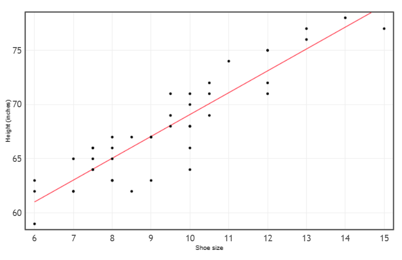
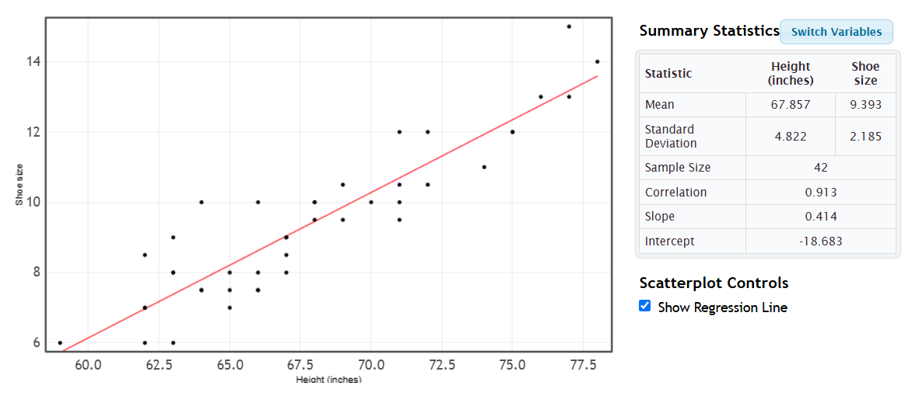
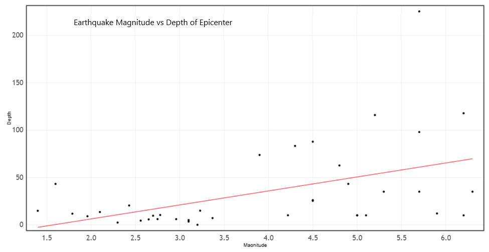

Previously, we used a scatterplot to visually determine whether a relationship exists between two quantitative variables. Next, we want to make predictions about the linear trend found in the scatterplot, this process of fitting a line to a set of data is called linear regression.
Objectives
At the end of this section you will be able to
Describe the nature of a relationship from scatterplot.
Interpret the correlation coefficient.
Find the linear regression equation.
Predict values using the regression equation.
Find the residual.
Recall in Chapter 2, we used a scatterplot to visually determine whether a relationship exists between two quantitative variables and the correlation coefficient to describe the strength and direction of the relationship. Next, we want to make predictions about the linear trend found in the scatterplot, this is known as linear regression. We create a line that goes through the points to help us make the predictions.
Let us do a quick review. A positive relationship exists when both variables increase while a negative relationship exists when one variable increase and the other variable decreases. The correlation coefficient measures its strength on a scale from -1 to +1.
If there is a strong positive linear relationship, the correlation coefficient is closer to +1.
If there is a strong negative linear relationship, the correlation coefficient is closer to -1.
If there is a moderate linear relationship, the correlation coefficient is around 0.5 or -0.5.
If there is no relationship or if there is a weak relationship, the correlation coefficient is around 0.
The regression line is known as the line of best fit since it minimizes the vertical distance each point is from the regression line. We will focus on linear regression where \(\hat y = a + bx \text{,}\) where a is the y-intercept and b is the slope of the line. The sign of the slope will match the sign of the correlation coefficient.
The regression line provides a model of a linear association between two quantitative variables to give a predicted value of the response (dependent) variable, based on a given value of in the explanatory (independent) variable.
We are going to continue our investigation of the relationship between a person’s height and his/her shoe size using the first day survey. If we know a person’s height, are we able to predict his/her shoe size? Or if we know a person’s shoe size, can we predict his/her height? Let’s find out.
First, let’s review the scatterplot and the correlation value.
Figure3.4.1.Image of Scatterplot for Shoe Size and Height
The scatterplot shows a strong positive correlation with r = 0.913. As the shoe sizes increase the student heights are also increasing. This matches the positive slope of 2.014. The slope tells us the height increases by 2 inches for each 1 change in shoe size. The scatterplot is scaled based on the data values, with shoe size ranging from 6 to 15 and heights between 59 inches and 78 inches. If we extend the graph to shoe size 0, we get the y-intercept of 48.396 inches. Thus, the linear regression equation to predict height is \(\hat y = 48.396 +2.014x \) where \(x\) is the student shoe size.
If you click on the box Show Regression Line in StatKey, the line goes through the middle if our points by minimizing their distances to it.

Figure3.4.2.Image of regression line for Shoe Size and Height
Making Predictions
Example: Predict a person’s height if the person has a size 8 shoe using the regression equation. Does this seem reasonable given the data in the scatterplot?
Solution: Using the linear regression equation
\begin{equation*}
\hat y = 48.396 +2.014(8) = 65.508
\end{equation*}
So we predict the person’s height to be 65.5 inches or 5 feet 5.5 inches tall. This does align with the scatter plot. On the x-axis we start at size 8, go up to the regression line then move to the left to find the height around 65 inches.
Example: Predict a person’s height for shoe size 11 using the regression equation. Does this seem reasonable given the data in the scatterplot?
Solution: Using the linear regression equation
\begin{equation*}
\hat y = 48.396 +2.014(11) = 70.55
\end{equation*}
So we predict the height to be 70.55 inches or 5 feet 10.6 inches tall. This does align with the scatter plot. On the x-axis we start at size 11, go up to the regression line then move to the left to find the height around 71 inches.
Suppose a person is 6 feet tall (72 inches), predict his/her shoe size using the current regression equation. Make sure you are solving for the correct variable.
Solution: Now we use \(\hat y=72 \) and we solve for\(x\text{.}\)
Subtract 48.396 from both sides of the equation and then divide by 2.014 to get \(x= 11.7 \) shoe size.
Estimating the value from the scatterplot, we start with the y-axis where y=72 inches, we go right until we land on the regression line and drop down to x = 11.5 shoe size.
Now lets switch the axes and compare the new scatterplot. The height is now the x-axis and the shoe size is along the y-axis.

Figure3.4.3.Image of regression line for Height on x-axis
We have the same correlation coefficient of r = 0.913 showing a strong positive linear relationship. But the linear regression equation is now \(\hat y = 0.414x-18.683 \) where \(x \) is the height and \(y\) is the shoe size. The slope tells us that the shoe size increases by .414 for each additional inch in height. Notice that for a height of 0 inches the predicted shoe size is -18.683.
Predicting the shoe size for someone 72 inches becomes
\begin{equation*}
\hat y = 0.414(72)-18.683 = 11.125
\end{equation*}
which is around size 11 shoe. Notice how the two estimates are slightly different.
Example: From the data file, the person who was 72 inches tall has a shoe size of 12. The residual using the second regression equation gave us the predicted size of 11.125. Thus the residual \(y- \hat y =12-11.125 = .875\) , the actual shoe size is almost one size greater than the estimate. The first regression equation gave a predicted size of 11.7, thus the residual is \(y- \hat y =12-11.7 = .3\) which is closer to the actual value.
Warning: the prediction is only as good as our graph. The y-intercept value often does not make sense in the context, but helps us to make our estimates within the scatterplot (knows as interpolation). Making predictions beyond the bounds of the data, known as extrapolation, can be off. For example, we do not want to predict former UNC basketball player Dalton Knecht’s shoe size using his height of 6 feet 6 inches (78 inches) since it goes off the graph. The prediction would not be reliable.
The difference between the actual value y and the predicted value \(\hat y \) is called a residual. This lets us know how far off our prediction is.
Example: From the data file, the person who was 72 inches tall has a shoe size of 12. The residual using the second regression equation gave us the predicted size of 11.125. Thus the residual \(y- \hat y =12-11.125 = .875\) , the actual shoe size is almost one size greater than the estimate. The first regression equation gave a predicted size of 11.7, thus the residual is \(y- \hat y =12-11.7 = .3\) which is closer to the actual value.
Practice
Now complete the correlation and regression analysis for different scenario.
Seismologists use tools like seismograms to record and analyze earthquake data, including their location, magnitude, depth, and other factors. Seismologists indicate the size of an earthquake in units of magnitude. Some methods are based on body waves (which travel deep within the structure of the earth) and surface waves. Earthquake magnitude is a logarithmic scale meaning the shaking will be 10 times as large during a magnitude 5 earthquake as during a magnitude 4 earthquake.
Suppose a seismologist wanted to know if there was a correlation between the magnitude of an earthquake and its depth at the epicenter (where the earthquake originates, measured in kilometers below the earth’s surface). The data file includes a list of earthquakes that were felt during a one-week period between April 19 and April 25, 2025 around the world, as recorded by the Southern California Earthquake Data Center. Generally, earthquakes with a magnitude of 2.5 can be felt. Use the variables Magnitude and Depth for these earthquakes.
insert the data file

Figure3.4.4.Image of regression line for magnitude and depth of earthquakes
Example3.4.5.Correlation.
State the correlation coefficient.
Solution.
Correlation r = 0.473 is a moderate positive relationship (note: this is statistically significant which we will investigate later in the semester).
Example3.4.6.Nature of the relationship.
Describe the nature of the relationship.
Solution.
As the magnitude of an earthquake increases, its depth below the surface also increases
Example3.4.7.Slope.
Identify the slope when x = magnitude and y = depth.
Solution.
Slope = 14.78 is positive.
Example3.4.8.Y-intercept.
Identify the y-intercept when x = magnitude and y = depth.
Solution.
The y-intercept = -23.334 km below surface.
Example3.4.9.Regression Equation.
Identify the regression equation where x = magnitude and y = depth.
Solution.
Depth = 14.78(magnitude)-23.334 or \(\hat y = 14.78x-23.334 \text{.}\)
Example3.4.10.Prediction.
Predict the depth of the epicenter for an earthquake with a magnitude of 6.0.
Solution.
\(\hat y = 14.78(6)-23.334=65.34 \) km below surface.
Example3.4.11.Residual.
Find the residual for a 4.8 earthquake with a depth of 62.7 km from El Salvador.
Solution.
Predict \(\hat y = 14.78(4.8)-23.334=47.61 \) km below surface. Residual \(y-\hat y = 62.7-47.61 = 15.09 \) km deeper than predicted .